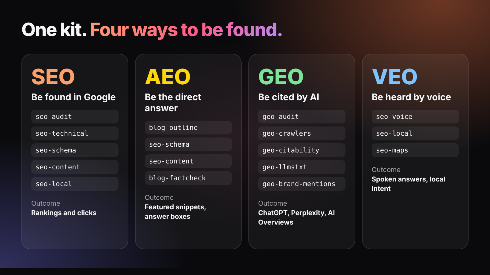
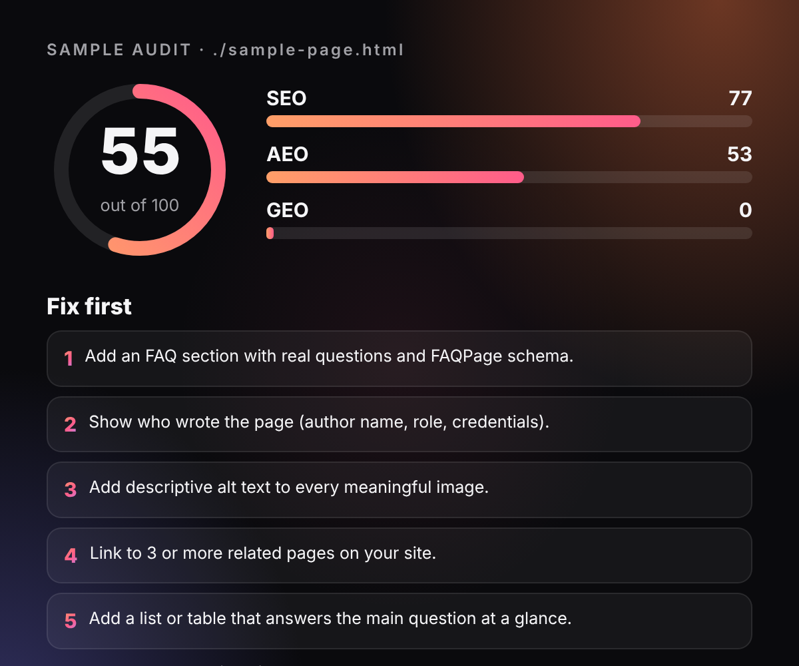
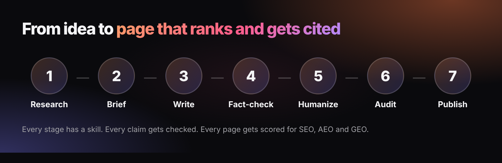

Rank in Google. Win answers. Get cited by AI.
83 skills for Claude Code, Codex, OpenCode and Antigravity, plus a free command that scores any page for SEO, AEO and GEO.
View on GitHubInstall in Claude Code
One kit, four ways to be found
Search changed. People ask Google, ask ChatGPT and ask their phone. Each channel rewards different signals, and the kit covers all four.
SEO
Site and page audits, technical SEO, schema, content, backlinks and local search.
AEO
Answer-first copy, FAQs and structured data that earn featured answers.
GEO
AI-crawler access, llms.txt, citability and brand mentions for ChatGPT, Perplexity and AI Overviews.
VEO
Spoken answers, voice search and local intent.

Score any page in 10 seconds
The auditor runs 25 checks and returns a score out of 100 for SEO, AEO and GEO, with the top five fixes. It checks titles, headings, schema, FAQ markup, answer-first openings, AI-crawler access in robots.txt, llms.txt, authorship and citations.
- Run
npx seo-aeo-geo-kit audit https://your-site.com/page - Read the score and the three sub-scores.
- Fix the top issues and run it again.
It reports what is missing. It does not predict rankings.

From idea to a page that ranks and gets cited
Research, brief, write, fact-check, humanize, audit and publish. Every stage has a skill, and every claim gets checked against the evidence policy.

How do I install the skills in Claude Code?
- In Claude Code, run
/plugin marketplace add alpit-patel/seo-aeo-geo-kit - Then run
/plugin install seo-aeo-geo-kit@seo-aeo-geo-kit - Ask: "Audit this page for SEO, AEO and GEO."
Prefer to pick skills? Run npx seo-aeo-geo-kit list and npx seo-aeo-geo-kit install --only geo. For background on the ideas, see Google's guidance on AI features in Search and the FAQPage schema reference.
Works with your AI tool
Every skill is a standard SKILL.md folder (the open Agent Skills format). One command installs them for your tool, and the installer makes them portable for you.
Claude Code
Full kit with sub-agents./plugin marketplace add alpit-patel/seo-aeo-geo-kit
OpenAI Codex
npx seo-aeo-geo-kit install --target codex --global
OpenCode
npx seo-aeo-geo-kit install --target opencode --global
Antigravity
npx seo-aeo-geo-kit install --target antigravity --global
Any other tool that reads Agent Skills: use --target agents or --dest <folder>. Run npx seo-aeo-geo-kit doctor to see which tools you have.
Frequently asked questions
What is the Claude SEO + AEO + GEO Kit?
It is a free, open-source kit for Claude Code with 83 skills for SEO, AEO (answer engines), GEO (AI search) and VEO (voice), plus a command-line auditor that scores any page from 0 to 100.
What is GEO (Generative Engine Optimization)?
GEO is making your content easy for AI systems such as ChatGPT, Perplexity and Google AI Overviews to find, understand and cite. It covers AI-crawler access, llms.txt, clear entities and quotable facts.
What is AEO (Answer Engine Optimization)?
AEO is structuring content so search features and assistants can lift a direct answer. It covers answer-first writing, FAQ markup, lists, tables and structured data.
How do I audit a page for free?
Run npx seo-aeo-geo-kit audit followed by the page URL. You get a score out of 100 for SEO, AEO and GEO, a pass or fail list of 25 checks, and the top fixes. No account or API key is needed.
How do I install the skills in Claude Code?
Run /plugin marketplace add alpit-patel/seo-aeo-geo-kit, then /plugin install seo-aeo-geo-kit@seo-aeo-geo-kit. You can also copy individual skills with npx seo-aeo-geo-kit install.
Does it work with OpenAI Codex?
Yes. Run npx seo-aeo-geo-kit install --target codex --global. The skills use the open Agent Skills format, and the installer makes them portable and installs the helper files next to them.
Does it work with OpenCode and Google Antigravity?
Yes. Run npx seo-aeo-geo-kit install --target opencode --global or --target antigravity --global. Any other tool that reads Agent Skills folders can use --target agents or a custom --dest folder.
Is it only for Claude Code?
No. The full plugin experience with sub-agents and slash commands is Claude Code only, but every skill is a standard SKILL.md folder, so the same skills work in Codex, OpenCode, Antigravity and other agents when you ask in plain language.
Does it guarantee rankings or AI citations?
No. Nobody can guarantee rankings. The kit gives you a repeatable process, a checklist and an honest score of what is missing.
Is my data sent anywhere?
The auditor only fetches the URL you give it, plus that site's robots.txt and llms.txt. The skills run inside Claude Code under your own settings.
Is it free and open source?
Yes. It is MIT licensed. It includes work from several open-source authors, who are credited in THIRD_PARTY_NOTICES.md.